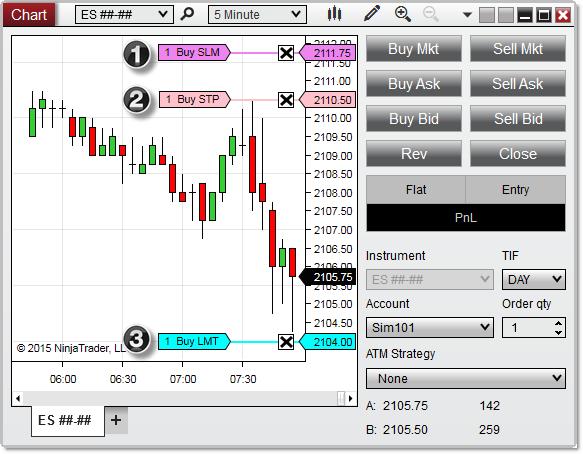
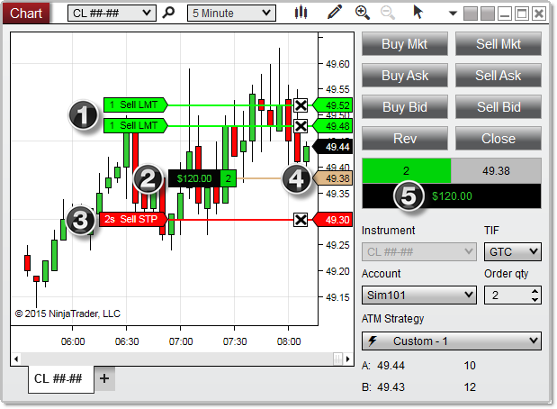
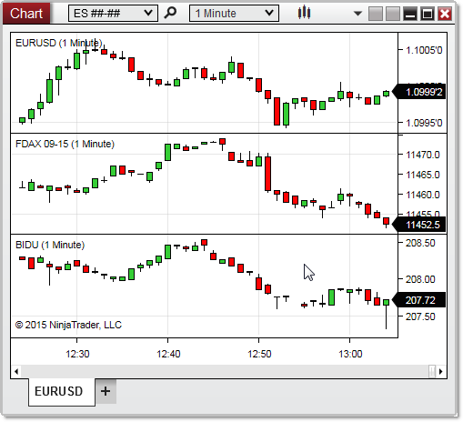
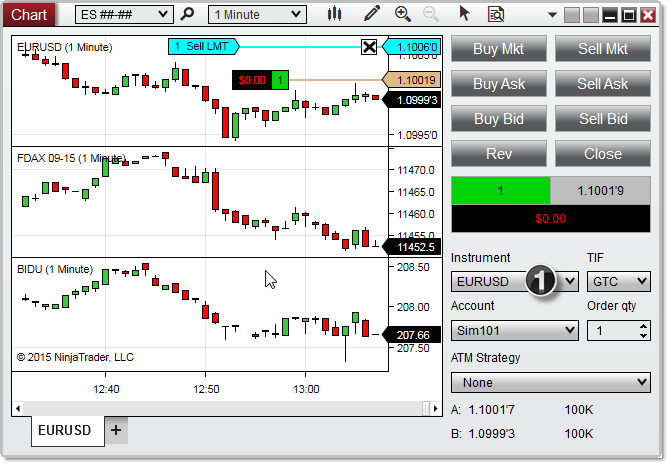
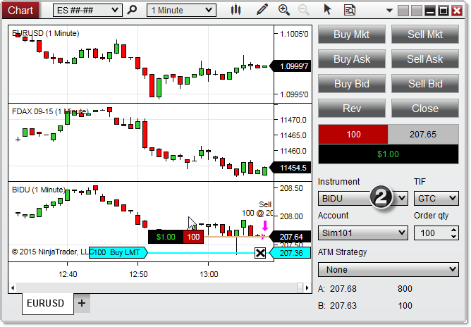

|
<< Click to Display Table of Contents >> Order & Position Display |


|
Order & Position Display
|
<< Click to Display Table of Contents >> Order & Position Display |
|
Chart Trader allows for the placement of orders, and the management of orders and positions, directly from a chart. Orders and positions within Chart Trader are displayed in a visual manner, allowing you to quickly compare them with current market movements while modifying orders in real-time. Chart Trader contains two primary components: the Chart Trader panel, which is used to place, modify, or cancel/close orders and positions, and the chart panel, on which Chart Trader draws visual representations of resting orders and open positions.
Order DisplayA resting order is displayed on the chart as a color-coded line connecting an order price label in the right margin of the chart with a second label displaying the order quantity and type.
Chart trader color properties can be set via the Chart Trader properties window.
The image below displays how orders are visualized in a NinjaTrader chart with Chart Trader enabled.

1. Buy stop-limit order for 1 contract at a price of X 2. Buy stop-market order for 1 contract at a price of X 3. Buy limit order for 1 contract at a price of X
|
 Understanding Position Display
Understanding Position Display
Position DisplayAn open position is displayed slightly differently. A position is displayed on the chart as a colored line connecting an entry price label in the right margin of the chart with a second label displaying the position size and current unrealized profit or loss. The text displaying the profit and loss is color coded, with green representing profit and red representing loss. The quantity displayed in the left-hand label is color coded, as well, with green representing a long position and red representing a short position.
Note: The display of unrealized PnL in Chart Trader can be switched between points, currency, pips, ticks, and percent by either left mouse clicking in the PnL field in the Chart Trader panel, or via the Chart Trader Properties window.
The image below displays the chart with an active position managed by an Advanced Trade Management strategy.

1. Two profit target orders 2. Position size and PnL flag for 2 contracts long 3. Two stop loss orders* 4. Average entry price 5. PnL in Chart Trader panel
* The stop loss line and flag represents two orders, as indicated by the letter "s" next to the qty number "2."
|
 Working with multiple instruments
Working with multiple instruments
Multi-Series ChartsNinjaTrader charts include the ability to plot multiple instruments within a single chart window, and each individual instrument on a chart can be selected and worked with separately using Chart Trader. For more information on how to manage instruments on a chart, see the Working with Multiple Data Series page.In the image above, we have applied a EURUSD instrument, an FDAX ##-## instrument, and a BIDU instrument in three separate panels of the same chart.Selecting Data SeriesWith more than one instrument applied to a chart, you can change the instrument upon which Chart Trader will act via the Instrument dropdown menu. This menu will list all of the Data Series currently applied to your chart. When an instrument is selected, only orders and positions for that particular instrument will be displayed in the chart panel, and any quick buttons used or order parameters set in the Chart Trader panel will apply to that instrument.

1. With the EURUSD selected in the Instruments dropdown menu, we can only that instrument's orders and positions.

2. With BIDU selected, we see a different set of orders and positions. |